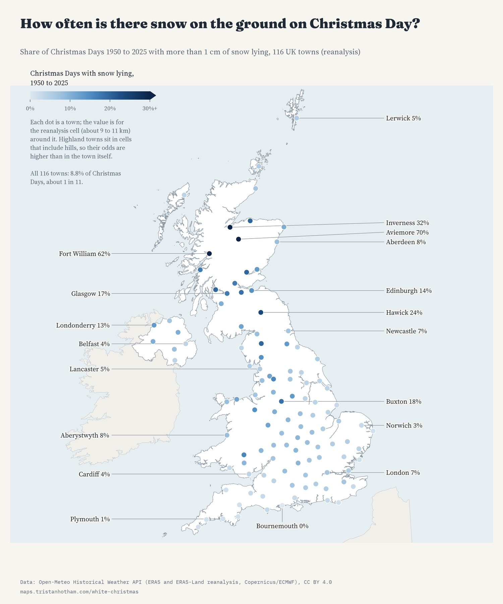
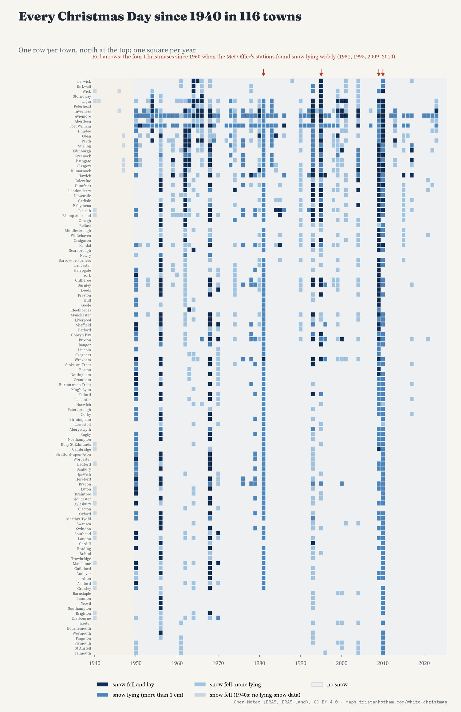
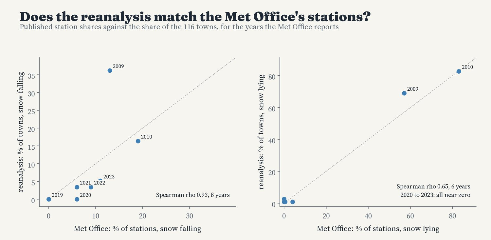
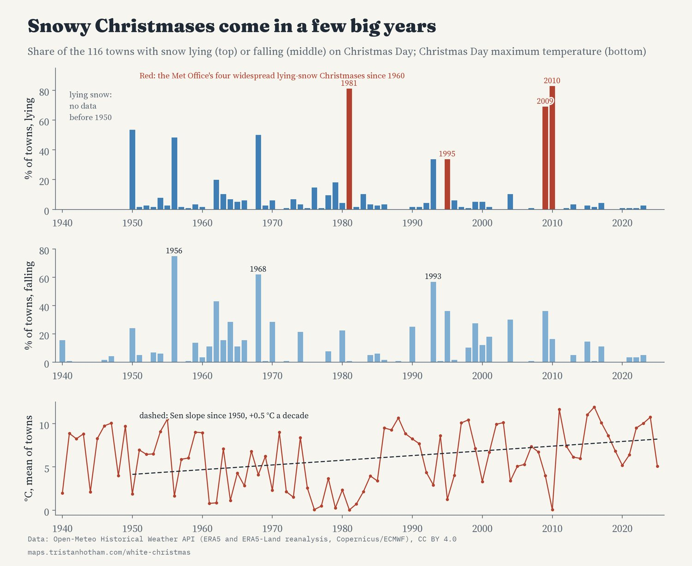
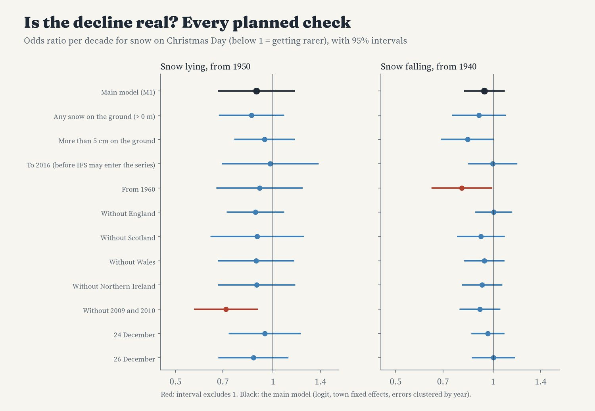

Every Christmas Day from 1940 to 2025 in 116 UK towns, from weather reanalysis. Colour shows how often snow lay on the ground (or fell). Pick a decade; tap a town for its Christmas calendar.
Will it snow on Christmas Day? I took every Christmas Day from 1940 to 2025 in 116 towns across the UK, from the ERA5 and ERA5-Land weather reanalyses, and asked three questions of each: did snow fall, was there snow lying on the ground (more than 1 cm), or both? Across all the towns, snow lay on 8.8% of Christmas Days since 1950, about 1 in 11, and fell on 8.8% since 1940.
The odds depend enormously on where you are. Snow never lay on Christmas Day in Bournemouth in 76 years of data, and lay just once in 9 other towns, all on or near the coasts of southern and eastern England, Devon and Cornwall. In London it lay 5 times (6.6%), in Manchester 7 times, in Glasgow 13 times and in Edinburgh 11 times. Every 100 m of height multiplies the odds of lying snow by about 3.4, and every degree further north by about 1.6: Buxton, the highest town in the set at 312 m, had snow lying on 18% of Christmases.
Aviemore (70%) and Fort William (62%) top the list, but with a warning. The reanalysis works on cells about 9 to 11 km across, and their cells include the slopes of the Cairngorms and the Nevis range. The model is also known to put too much snow on mountains. Their figures describe the hills around the towns as much as the streets.

Share of Christmas Days 1950 to 2025 with more than 1 cm of snow lying.
White Christmases come in clusters of a few years when snow covers much of the country. In 2010 snow lay in 96 of the 116 towns, in 1981 in 94 and in 2009 in 80. In 2024 and 2025 it lay in none. Every town had snow falling on at least one Christmas Day, but 8 towns, all in Scotland, have had snow lying on Christmas Day since 2010.

Every Christmas Day since 1940 in every town, north at the top.
The Met Office counts a Christmas as white if a single snowflake is seen falling at one of its stations. A reanalysis cannot see a single flake: it gives the average snow over a grid cell. But it can be checked against the Met Office's record of lying snow. The Met Office lists four Christmases since 1960 when more than 40% of its stations had snow on the ground: 1981, 1995, 2009 and 2010. In this data those four years rank first, second, third and fifth of all 66 Christmases since 1960 by the share of towns with lying snow.

Met Office station figures against the reanalysis, where published.
From 1950 to 1987, snow lay on 10.4% of town Christmases; from 1988 to 2025, 7.3%. Christmas Days with no lying snow in any town went from 4 of 38 to 14 of 38, and a rank test on the yearly share of towns with snow lying finds a decline unlikely to be chance. But my main model, written down before I looked, cannot tell the overall fall in the odds apart from chance, because 2009 and 2010, two of the three snowiest Christmases since 1950 in this data, are recent. Leave those two years out and the decline becomes clear. Christmas Day's top temperature has risen by about 0.5°C a decade since 1950.

Each Christmas: share of towns with snow lying and falling, and Christmas Day's average top temperature.

Every planned check of the trend.
Data. Daily snowfall, snow depth and top temperature for 24 to 26 December, 1940 to 2025, at each town from the Open-Meteo Historical Weather API, which serves the ERA5 reanalysis (from 1940) and ERA5-Land (from 1950, the only source of snow depth, so lying snow starts in 1950). From 2017 Open-Meteo may use ECMWF's forecast model analyses for snowfall and temperature; trends ending in 2016 are shown in the checks.
Method. I wrote the definitions, models and checks down before computing any result by town or year. The trend model is a logistic regression with a fixed effect for each town and uncertainty clustered by year, since every town shares the same Christmas weather; a rank test (Mann-Kendall) on the national series is the second planned test.
What this cannot say. Reanalysis is a model guided by observations, not a weather station in your street; it averages over cells about 9 to 11 km across, and it puts too much snow on hills. The 1940s are less well observed. Christmas Day is one day a year, so any trend rests on a few dozen Christmases.